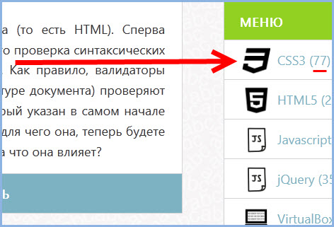
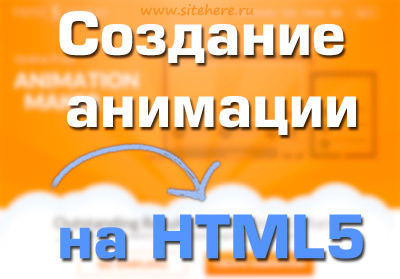
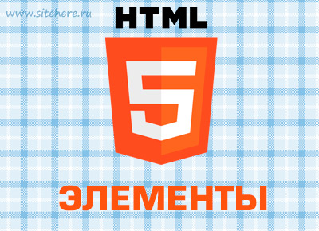
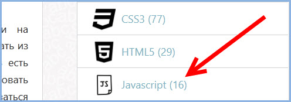

SiteHere.ru
Уроки CSS3, HTML5, jQuery
Автор Юрий Немец
CSS3
На данный момент(26.06.2014) написано 77 статей по теме CSS3.
(Нажмите на "s", чтобы увидеть подсказку)Вертикальный слайд
Эти слайды находятся между соседними (слева и справа) слайдами. Чтобы перемещаться между ними нажмите кнопку вниз.
Нижний слайд из двух вертикальных
Нажмите вверх или вниз для навигации.
Нижний уровень 2
Анимация HTML5
Нижний уровень 3
5 HTML элементов которые вы не знаете
Javascript
В категории Javascript на дату 26.06.2014 написано 17 статей.
Удобная навигация и увеличение
Нажмите ESC чтобы увидеть миниатюры слайдов.
Чтобы увеличить какой-то элемент слайда, зажмите кнопку "Alt" и кликните левой кнопкой мыши на элемент. Чтобы вернуться назад проделайте то же самое.
Красивый маркированный список
Симпатичный нумерованный список
Красивые переходы
Вы можете выбрать переход на свой вкус:
Cube -
Page -
Concave -
Zoom -
Linear -
Fade -
None -
Default
Темы оформления
Reveal.js поддерживает следующие стили:
Default -
Sky -
Beige -
Simple -
Serif -
Night
Moon -
Solarized
* Чтобы использовать понравившийся стиль, необходимо его подключить между тегами <head> используя тег <link>.
Изменение цвета фона слайда
Установите атрибут data-background="#007777" для слайда, чтобы изменить фоновый цвет определенного слайда.
Фоновое изображение
<section data-background="image.png">Повторяющееся изображение
<section data-background="image.png" data-background-repeat="repeat" data-background-size="100px">Фоновые переходы
Используйте backgroundTransition: 'slide' чтобы задавать различные переходы фона.
Переопределение фоновых переходов
Вы можете переопределить фоновый переход с помощью атрибута data-background-transition="slide".
Оформление цитат
Например, текст из моего урока:
“Сегодня мы будем иметь дело со слайд-шоу...”
или в виде блока:
“Например, когда человек смотрит какую-либо вещь в интернет-магазине, то, как правило, он максимально увеличивает изображение, чтобы разглядеть товар, который он хочет приобрести. И только после этого он совершает покупку.”
Красивая подсветка кода (с возможностью редактирования онлайн)
$(window).load( function() {
$("#endpage-box").endpage_box({
animation: "fade",
from: "50%",
to: "110%",
content: "Добавьте свое сообщение сюда."
});
});
Переходы между слайдами
Вы можете обратиться к определенному слайду, сюда.
Частичный показ
Нажмите на стрелочку "Далее"...
... и еще ...
Пауза
На клавиатуре нажмите клавишу "b" чтобы перейти в режим "паузы". Эта функция очень полезна если вы хотите взять паузу при длинной презентации.